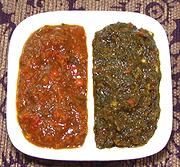

|
ShattaEgypt, Palestine - Shatta | ||||
| Makes: Effort: Sched: DoAhead: |
2 cups ** 35 min Yes |
This hot sauce is particularly popular in Egypt, where it has been much used for Koshari, the ubiquitous "comfort food" of that country. Shatta is also popular in Palestine. It should not be confused with Shata - Sudanese (one "T") popular in Sudan - it is very different. | |||
|
|
------- 3 10 8 ------- 2 2 ------- 1 1 1 ------- 1/2 2 6 1 |
--- oz cl --- T T --- t t t --- T T oz c |
-- Vegetables Chilis, fresh red (1) Thai Chili (2) Garlic -- Herbs Cilantro (3) Parsley, flat (3) -- Spices Cumin seed Salt Pepper -- Wet Items Wine Vinegar, white Olive Oil, ExtV Tomato Paste Water |
The only difference between our Red and Green Shattas is that the Red has 2 T of each of the green herbs, while the Green has 1 whole cup each (see Comments). Make - (35 min (Red) | 1 hr (Green))
|